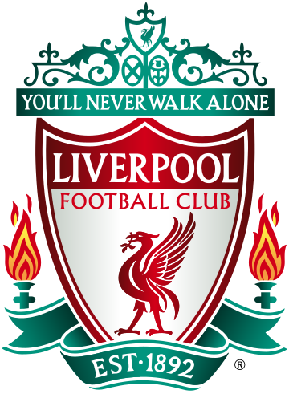

Liverpool Football Club is a professional football club based in Liverpool, England, that competes in the Premier League, the top tier of English football. Domestically, the club has won nineteen League titles, seven FA Cups, a record nine League Cups and fifteen FA Community Shields. In international competitions, the club has won six European Cups, more than any other English club, three UEFA Cups, four UEFA Super Cups, and one FIFA Club World Cup. In terms of trophies won, it is the joint-most successful club in English football.